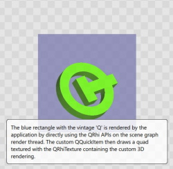

Scene Graph - RHI Texture Item
Shows how to implement a custom QQuickItem that displays a QRhi-rendered texture.

This example shows how to implement an item that performs cross-platform, portable 3D rendering into a texture using the QRhi APIs and then displays that image.
The RHI Under QML example shows how to implement portable, cross-platform 3D rendering with the QRhi APIs in a manner where the custom rendering is issued before the Qt Quick scene graph's own rendering, effectively providing an "underlay". That approach is efficient since now additional render targets and render passes are needed, the custom rendering is injected in the main render pass before the scene graph's own draw calls.
In contrast, this example involves a separate render target (a QRhiTexture, the dimensions of which match the QQuickItem's size in the scene) and a whole render pass that is used to clear and then draw into that texture. The texture is then used with an instance of a custom QQuickItem subclass that is implemented using the QSGSimpleTextureNode helper class.
Compared to the underlay/overlay approach, this allows displaying, blending, and transforming the flattened 2D image of the 3D rendering anywhere in the Qt Quick scene since here we have a true QQuickItem. This comes at the expense of being more expensive in terms of resources and performance since it involves rendering to a texture first.
Note: This example demonstrates advanced, low-level functionality performing portable, cross-platform 3D rendering, while relying on APIs with limited compatibility guarantee from the Qt Gui module. To be able to use the QRhi APIs, the application links to Qt::GuiPrivate and includes <rhi/qrhi.h>.
Walkthrough
ExampleRhiItem is the QQuickItem subclass that is exposed to QML and is instantied in the scene.
class ExampleRhiItem : public RhiItem { Q_OBJECT QML_NAMED_ELEMENT(ExampleRhiItem) Q_PROPERTY(float angle READ angle WRITE setAngle NOTIFY angleChanged) public: float angle() const { return m_angle; } void setAngle(float a); RhiItemRenderer *createRenderer() override; signals: void angleChanged(); private: float m_angle = 0.0f; };
The angle property has a NumberAnimation on it, this is what drives the continuous rotation of the 3D mesh.
ExampleRhiItem { id: renderer anchors.fill: parent anchors.margins: 10 NumberAnimation on angle { from: 0 to: 360 duration: 5000 loops: Animation.Infinite }
ExampleRhiItem drives from RhiItem, which contains the generic implementation of a QQuickItem that maintains and displays a QRhiTexture. The design is somewhat similar to the legacy QQuickFramebufferObject and its inner Renderer class. In essence what is implemented here offers the core functionality of QQuickFramebufferObject, but without being tied to OpenGL. To support the threaded rendering model of the Qt Quick scene graph, the a separate RhiItemRenderer object is instantiated that then lives on the Qt Quick render thread, if there is one. RhiItem, being a QQuickItem, lives and operates on the main (gui) thread.
class RhiItem : public QQuickItem { Q_OBJECT public: RhiItem(QQuickItem *parent = nullptr); virtual RhiItemRenderer *createRenderer() = 0; protected: QSGNode *updatePaintNode(QSGNode *, UpdatePaintNodeData *) override; void geometryChange(const QRectF &newGeometry, const QRectF &oldGeometry) override; void releaseResources() override; bool isTextureProvider() const override; QSGTextureProvider *textureProvider() const override; private Q_SLOTS: void invalidateSceneGraph(); private: mutable RhiItemNode *node = nullptr; };
RhiItemRenderer has three pure virtual functions expected to be reimplemented in subclasses. initialize() is called to let the application-provided renderer to know the QRhi and QRhiTexture instances to use. The example also handles the resizing of the item, which leads to having to use a new texture with a size different than before. This means initialize() may be called multiple times during the lifetime of a RhiItemRenderer.
synchronize() is called from the scene graph's synchronizing phase, i.e. from the RhiItem's updatePaintNode(). That implies that, if the threaded rendering model is used, that it is safe to copy data between the main and the render thread since the main thread is blocked.
render() is the function that is called every time the RhiItem's texture's content needs updating. This function is expected to record a render pass onto the provided QRhiCommandBuffer, targeting a QRhiTextureRenderTarget associated with the QRhiTexture passed to initialize().
class RhiItemRenderer { public: virtual ~RhiItemRenderer() { } virtual void initialize(QRhi *rhi, QRhiTexture *outputTexture) = 0; virtual void synchronize(RhiItem *item) = 0; virtual void render(QRhiCommandBuffer *cb) = 0;
The scene graph node that is instantied by RhiItem is implemented using QSGSimpleTextureNode.
class RhiItemNode : public QSGTextureProvider, public QSGSimpleTextureNode
RhiItemNode connects to the window's beforeRendering() signal. This signal is emitted on the render thread, if there is one, every time the Qt Quick scene graph has started to prepare a new frame.
RhiItemNode::RhiItemNode(RhiItem *item) : m_item(item) { m_window = m_item->window(); connect(m_window, &QQuickWindow::beforeRendering, this, &RhiItemNode::render, Qt::DirectConnection);
The slot connected to this signal retrieves the QRhiCommandBuffer used by the QQuickWindow, while also providing an example of what to do if there is no on-screen window, and so no QRhiSwapChain associated with the QQuickWindow. Then the RhiItemRenderer's render() function is invoked.
void RhiItemNode::render() { // called before Qt Quick starts recording its main render pass if (!isValid() || !m_renderPending) return; QRhiSwapChain *swapchain = m_window->swapChain(); QSGRendererInterface *rif = m_window->rendererInterface(); // For completeness, handle both cases: on-screen QQuickWindow vs. // off-screen QQuickWindow e.g. by using QQuickRenderControl to redirect // into a texture. For the application's purposes just handling the first // (swapchain is non-null) would be sufficient. QRhiCommandBuffer *cb = swapchain ? swapchain->currentFrameCommandBuffer() : static_cast<QRhiCommandBuffer *>( rif->getResource(m_window, QSGRendererInterface::RhiRedirectCommandBuffer)); if (!cb) { qWarning("Neither swapchain nor redirected command buffer are available."); return; } m_renderPending = false; m_renderer->render(cb); markDirty(QSGNode::DirtyMaterial); emit textureChanged(); }
The application-provided initialize and synchronize steps are invoked from the RhiItemNode's sync() function which in turn is called from RhiItem's updatePaintNode().
Once the QRhi is retrieved from the QQuickWindow, the need for a new QRhiTexture is examined. If there is no texture yet, or it looks like the item's size (in pixels, note the multiplication with the device pixel ratio) has changed, a new texture is created. The QRhiTexture is then wrapped in a QSGTexture, which also involves passing ownership. The wrapping QSGTexture is created using a QQuickWindow helper function, createTextureFromRhiTexture(). In spirit this is similar to the createTextureFromImage(), but while the traditional QImage-based function creates a new QRhiTexture under the hood, this variant takes an existing QRhiTexture.
Finally, the application-provided synchronize() function is invoked.
void RhiItemNode::sync() { if (!m_rhi) { m_rhi = m_window->rhi(); if (!m_rhi) { qWarning("No QRhi found for window %p, RhiItem will not be functional", m_window); return; } } m_dpr = m_window->effectiveDevicePixelRatio(); const int minTexSize = m_rhi->resourceLimit(QRhi::TextureSizeMin); QSize newSize = QSize(qMax<int>(minTexSize, m_item->width()), qMax<int>(minTexSize, m_item->height())) * m_dpr; bool needsNew = !m_sgTexture; if (newSize != m_pixelSize) { needsNew = true; m_pixelSize = newSize; } if (needsNew) { QRhiTexture *texture = m_rhi->newTexture(QRhiTexture::RGBA8, m_pixelSize, 1, QRhiTexture::RenderTarget); if (texture->create()) { m_sgTexture.reset(m_window->createTextureFromRhiTexture(texture)); setTexture(m_sgTexture.get()); m_renderer->initialize(m_rhi, texture); } else { qWarning("Failed to create RhiItem texture of size %dx%d", m_pixelSize.width(), m_pixelSize.height()); delete texture; } } m_renderer->synchronize(m_item); }
The example's implementation makes a copy of the angle value, meaning the renderer's copy of the value is updated based on the current value of the property in ExampleRhiItem.
void ExampleRhiItemRenderer::synchronize(RhiItem *rhiItem) { // called on the render thread (if there is one), while the main (gui) thread is blocked ExampleRhiItem *item = static_cast<ExampleRhiItem *>(rhiItem); if (item->angle() != scene.logoAngle) scene.logoAngle = item->angle(); }
The example's implementation of the initialization step stores the QRhi for future use. This example does not handle the case of the QRhi changing over the lifetime of the item. If moving (reparenting) the item between QQuickWindow instances is involved, then that would need to be handled as well. What is handled however, is the case of the outputTexture changing. With the implementation of RhiItem and RhiItemNode, the QRhiTexture is different whenever the window, and so the item in the scene, is resized.
If not yet done, a QRhiTextureRenderTarget is created. The example also demonstrates rendering with a depth buffer present. Care must be taken to correctly resize this buffer whenever its size no longer matches the outputTexture's size in the previous invocation of the function.
Finally, if not yet done, the resources needed for rendering the scene are prepared: vertex buffer, uniform buffer, graphics pipeline.
The traditional Qt logo renderer, that has been ported from the OpenGL-based examples of Qt 4 and 5, provides vertex positions and normals in two separate chunks, hence using a non-interleaved layout for the vertex buffer.
The vertex and fragment shaders are loaded from .qsb files generated at build time (if using CMake).
void ExampleRhiItemRenderer::initialize(QRhi *rhi, QRhiTexture *outputTexture) { m_rhi = rhi; if (m_output && m_output != outputTexture) { m_rt.reset(); m_rp.reset(); } m_output = outputTexture; if (!m_ds) { m_ds.reset(m_rhi->newRenderBuffer(QRhiRenderBuffer::DepthStencil, m_output->pixelSize())); m_ds->create(); } else if (m_ds->pixelSize() != m_output->pixelSize()) { m_ds->setPixelSize(m_output->pixelSize()); m_ds->create(); } if (!m_rt) { m_rt.reset(m_rhi->newTextureRenderTarget({ { m_output }, m_ds.get() })); m_rp.reset(m_rt->newCompatibleRenderPassDescriptor()); m_rt->setRenderPassDescriptor(m_rp.get()); m_rt->create(); } if (!scene.vbuf) { createGeometry(); const quint32 vsize = m_vertices.size() * 3 * sizeof(float); const quint32 nsize = m_normals.size() * 3 * sizeof(float); const quint32 vbufSize = vsize + nsize; scene.vbuf.reset(m_rhi->newBuffer(QRhiBuffer::Immutable, QRhiBuffer::VertexBuffer, vbufSize)); scene.vbuf->create();
In the render step, the uniform buffer is updated. Note how the QRhi-provided correction matrix is multiplied in. This allows ignoring the 3D API specific differences when it comes to coordinate systems, and continuing to work with OpenGL-style vertices and normals.
A single render pass is recorded, containing a single draw call.
void ExampleRhiItemRenderer::render(QRhiCommandBuffer *cb) { QRhiResourceUpdateBatch *rub = scene.resourceUpdates; if (rub) scene.resourceUpdates = nullptr; else rub = m_rhi->nextResourceUpdateBatch(); const QMatrix4x4 matrix = m_rhi->clipSpaceCorrMatrix() * calculateModelViewMatrix(); rub->updateDynamicBuffer(scene.ubuf.get(), 0, 64, matrix.constData()); const QColor clearColor = QColor::fromRgbF(0.5f, 0.5f, 0.7f, 1.0f); cb->beginPass(m_rt.get(), clearColor, { 1.0f, 0 }, rub); cb->setGraphicsPipeline(scene.ps.get()); const QSize outputSize = m_output->pixelSize(); cb->setViewport(QRhiViewport(0, 0, outputSize.width(), outputSize.height())); cb->setShaderResources(); const QRhiCommandBuffer::VertexInput vbufBindings[] = { { scene.vbuf.get(), 0 }, { scene.vbuf.get(), quint32(m_vertices.size() * 3 * sizeof(float)) } }; cb->setVertexInput(0, 2, vbufBindings); cb->draw(m_vertices.size()); cb->endPass(); }
See also Scene Graph - RHI Under QML and Scene Graph - Custom QSGRenderNode.